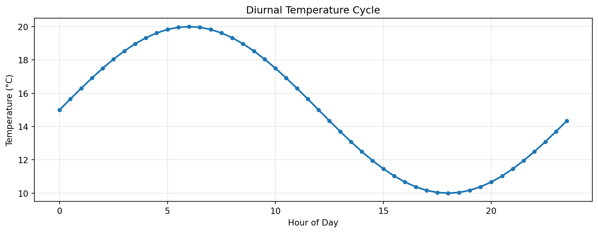

Mean temperature: 18.5°CATOC 4815: Python & Data Analysis
Demo Lecture - Introduction to Scientific Computing
Will Chapman
CU Boulder ATOC
2026-01-01
Welcome
Course Overview
- Python programming for atmospheric science
- Data analysis with real datasets
- Visualization techniques
- Final project: Independent analysis
Python Basics
Working with NumPy
Arrays are fundamental to scientific computing:
Key point: NumPy operations are vectorized and fast!
Data Structures
Data Analysis
Loading Climate Data
Example: Working with NCEP/NCAR Reanalysis
Statistical Analysis
Common operations for climate data:
- Time averaging:
data.mean(dim='time') - Spatial patterns:
data.groupby('season').mean() - Anomalies:
data - data.mean(dim='time') - Trends: Linear regression with
scipy.stats
Visualization
Matplotlib Basics
import matplotlib.pyplot as plt
import numpy as np
# Generate sample data
time = np.arange(0, 24, 0.5)
temp = 15 + 5 * np.sin(2 * np.pi * time / 24)
# Create plot
plt.figure(figsize=(10, 4))
plt.plot(time, temp, 'o-', linewidth=2, markersize=4)
plt.xlabel('Hour of Day')
plt.ylabel('Temperature (°C)')
plt.title('Diurnal Temperature Cycle')
plt.grid(True, alpha=0.3)
plt.tight_layout()
plt.show()
Best Practices
Good Plot ✅
- Clear labels
- Readable fonts
- Appropriate colors
- Legend when needed
- Proper units
Avoid ❌
- Tiny text
- Rainbow colormap (usually)
- 3D when 2D works
- Chart junk
- Missing labels
Mathematical Formulas
Atmospheric Equations
Ideal Gas Law:
\[ p = \rho R T \]
Hydrostatic Balance:
\[ \frac{\partial p}{\partial z} = -\rho g \]
Geostrophic Wind:
\[ u_g = -\frac{1}{\rho f}\frac{\partial p}{\partial y}, \quad v_g = \frac{1}{\rho f}\frac{\partial p}{\partial x} \]
Course Logistics
Weekly Structure
| Day | Activity |
|---|---|
| Monday | Lecture & coding demo |
| Wednesday | Lab work & debugging |
| Friday | Discussion & code review |
Grading
- Homework (40%): Weekly coding assignments
- Labs (30%): In-class exercises
- Final Project (30%): Independent analysis
Resources
Getting Help
- Office Hours: By appointment (wchapman@colorado.edu)
- Course Website: willychap.github.io/course
- Documentation:
- Python: docs.python.org
- NumPy: numpy.org
- Xarray: docs.xarray.dev
- Stack Overflow: For debugging
Next Week
Topics
- File I/O
- CSV and NetCDF
- Data cleaning
Homework
- Install Python environment
- Read: Chapters 1-2
- Complete Lab 1
Questions?
Contact
Prof. Will Chapman 📧 wchapman@colorado.edu 🌐 willychap.github.io 🏢 ATOC Building, CU Boulder
See you Wednesday!

ATOC 4815/5815 - Chapman Research Group